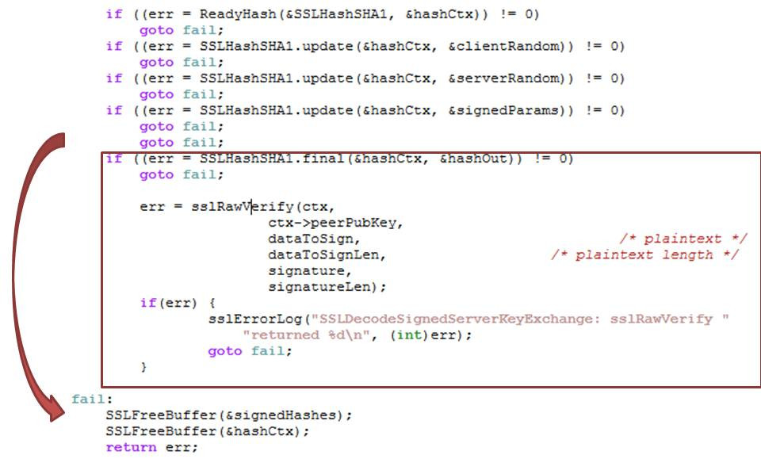

Quel est le point commun entre

Mars Climate Orbiter
- Sonde écrasée sur Mars en 1999
- Erreur causée par un problème d'unité: système américain vs international
- Coût total : $327 millions

Apple goto fail
- Faille dans la validation de certificats HTTPS (iOS et OS X)
- Double goto court-circuitant des validations
- Des millions de machines vulnérables
Apple "goto fail"


Gandhi dans le jeu

- Censé être le personnage le plus pacifique du jeu
- A cause d'un integer underflow devient le plus aggressif
Ce ne sont que 3 exemples parmi des millions
Il y aura toujours des comportements non prévus et des bugs...
Est-ce une fatalité ? Que pouvons-nous faire pour tenter d'y remédier ?
Qu'est qu'un logiciel de qualité selon vous ?
Caractéristiques ISO 9126
Capacité fonctionnelle (Functionality)
- L’aptitude (Suitability)
- L’exactitude (Accuracy)
- L’interopérabilité (Interoperability)
- La conformité (Compliance)
- La sécurité (Security)
Fiabilité (Reliability)
- La maturité (Maturity)
- La tolérance aux fautes (Fault Tolerance)
- La capacité de récupération (Recoverability)
Facilité d’usage (Usability)
- L’exploitabilité (Operability)
- La facilité d’apprentissage (Learnability)
- La facilité de compréhension (Understandability)
Efficacité (Efficiency)
- L’efficacité des ressources employées (Resource Behaviour)
- L’efficacité des temps de réalisation (Time Behaviour)
Maintenabilité (Maintainability)
- La stabilité (Stability)
- La facilité de modification (Changeability)
- La facilité d’analyse (Analysability)
- La facilité à être testé (Testability)
Portabilité (Portability)
- La facilité d’installation (Installability)
- La facilité de migration (Replaceability)
- L’adaptabilité (Adaptability)
- Conformité (propre à la portabilité, par exemple, conformité à des normes de bases de données)
Quels moyens pour arriver à un produit logiciel de qualité ?
- Clean code
- Test
- Refactoring vers du code simple
- Revues (code, conception)
- Travail en équipe et organisé (ex: XP, Scrum, ...)
- Proximité du client
Statistiques sur le taux de détection de défauts

Pourquoi tester ?

Approche boite noire

Approche boite blanche

Types de tests
- Tests unitaires
- Tests d'intégrations
- Tests end-to-end
- Tests d'acceptances
- Tests de fumée (Smoke test)
- Tests exploratoires
- Tests de performance
- ...
Tests unitaires
- Vérifient le bon fonctionnement d'un morceau de code (unité)
- Ecrits avec du code
- 4 phases pour chaque test
- Initialisation
- Exercice
- Vérification
- Démontage
Tests unitaires - Caractéristiques
- S'exécutent très rapidement (quelques ms)
- Ecrits pour les programmeurs (souvent par les programmeurs)
- En général testent de la technique mais peuvent tester du fonctionnel
- Servent de documentation
Tests d'intégration/service
- Vérifient le bon assemblage de plusieurs composants
- Ecrits pour les programmeurs (souvent par les programmeurs)
Tests end-to-end
- Vérifient le bon fonctionnement du logiciel
- Ecrits pour le client et les programmeurs
- Exercent l'UI tel un utilisateur
Tests d'acceptance
- Vérifient le bon fonctionnement du logiciel
- Ecrits pour le client et les programmeurs
- Peuvent se trouver plus au moins proche du code
Tests de fumée
- Vérifient le logiciel dans les cas simples
- Le nom provient du hardware
- Tests manuels
Tests de performance
- Tests manuels
- Utilisation processeur
- Utilisation mémoire
- Utilisation disque
- Montée en charge
Tests manuels
- Réalisé en général par des testeurs
- Suivent en général un plan de test
Attention !
"Testing shows the presence, not the absence of bugs." - E. Dijkstra
Pyramide de tests

Pyramide de tests
- Eviter la duplication
- Pousser les tests vers le bas
Mauvaise pratique : le cône de glace

Tests unitaires (avec JUnit)

Assertions
Vérification d'une condition, d'un état particulier
Au moins une assertion par cas de test !

Assertions (JUnit)
assertEquals(expectedValue, actualValue);
Privilégier la bibliothèque AssertJ pour des assertions proches du langage naturel (fluent)
assertThat(actualValue).isEqualTo(expected);
assertThat(actualList).contains(value);
Un test se décompose en 3 parties
- Given/Arrange: Etant donné un état initial
- When/Act: Quand on réalise quelque chose
- Then/Assert: Alors on s'attend à un certain état final
Given / When / Then
// GIVEN
Order order = new Order(Pub.ONE_BEER, false, 1);
// WHEN
int actualPrice = pub.computeCost(order);
// THEN
assertThat(actualPrice).isEqualTo(74);
Cas de test (Test case)
@Test
public void pay_74_for_a_beer() {
Order order = new Order(Pub.ONE_BEER, false, 1);
int actualPrice = pub.computeCost(order);
assertThat(actualPrice).isEqualTo(74);
}
Cas de test (Test case)
- Privilégier le snake_case
- Espacer les Given / When / Then
- Un cas de test doit être assez court (max 7-8 lignes)
Suite de test (Test suite)
- Permet de grouper les tests
- En général une suite de test par classe
Set up / Tear down (Montage / Démontage)
Méthodes exécutées avant / après chaque cas de test
@BeforeEach
public void setUp() {
// initialisations
}
@TearDown
public void tearDown() {
// nettoyages
}
Tests unitaires et dépendances
Comment tester ce code ?
public int printReceipt(String drink, boolean student, int amount) {
// [...]
USBPrinter printer = new USBPrinter("/dev/ttyUSB0");
printer.print(drink, student, amount, price*amount);
// [...]
}
Doublure de test (Test Double)

Pourquoi ?
- Parfois on ne veut pas exécuter une partie de code pendant le test (envoi de mail, base de donnée, réseau, ...)
- On remplace donc l'implémentation d'un module par une fausse
- Meilleur performance en utilisant une doublure
- On utilise le type de doublure le plus adapté en fonction des cas
Comment ?
- Il suffit d'implémenter une interface pour pouvoir avoir plusieurs implémentations
- Une dite de "production", une (ou plusieurs) de test
Stub (Bouchon)
- Permet de pré-configurer les futures réponses du module doublure
- Utile pour une base de donnée, un appel réseau, une saisie utilisateur...
Spy (Espion)
- Implémentation qui enregistre les intéractions avec le module
- Permet de récupérer les intéractions passées
Dummy
- Doublure qui ne fait rien de particulier
- Utile pour créer une doublure minimale dont on ne se sert pas vraiment
Fake (Faux)
- Implémentation qui fonctionne mais qui prend des raccourcis
- Exemple: une base de donnée en mémoire
Mock
- Permet de pré-configurer les futures réponses du module doublé (comme le stub)...
- ... et de vérifier les intéractions en fin de test (comme le spy)
- Des bibliothèques peuvent aider, par exemple Mockito
La couverture de code, c'est quoi ?
- Mesure qui permet de voir la proportion de code de production exécutée par les tests
- S'exprime en général en pourcentage
- Permet de s'assurer qu'un morceau de code est couvert par les tests
- Dans certains IDEs on peut voir la couverture pour chaque ligne de code
Couverture de test
100% n'est pas un objectif
100% de couverture ne veut pas dire pas de bug
Automatisation des tests
- Servent comme filet de sécurité (harnais de test)
- Vérifient la non-régression
Tests F.I.R.S.T.
Bonnes pratiques pour l'écriture de tests
Tests F.I.R.S.T.
Fast (Rapides)
- Des tests trop long freinent le développeur
- Plus le nombre de tests est important, plus les tests doivent être rapides
- Une durée idéale est quelques millisecondes par test
Tests F.I.R.S.T.
Isolated / Independent (Isolés / Indépendants)
- Un test doit vérifier un et un seul comportement
- Pas de dépendance sur l'ordre d'exécution
- Pas de dépendance sur l'environnement
- Permet de lancer les tests en parallèle
Tests F.I.R.S.T.
Repeatable (Répétables)
- Pas de dépendance sur l'environnement
- Comportement déterministe (pas de test dépendant du temps ou de l'aléatoire)
Tests F.I.R.S.T.
Self-Validating
(Auto-Validant)
- Pas besoin d'intervention manuelle
- Un test passe ou échoue, pas d'autre état possible
Tests F.I.R.S.T.
Thorough / Timely (Exhaustifs / Au bon moment)
- Cas nominaux
- Cas alternatifs
- Cas d'erreur (mauvais paramètres, ...)
- De préférence écrits avant le code qui va avec